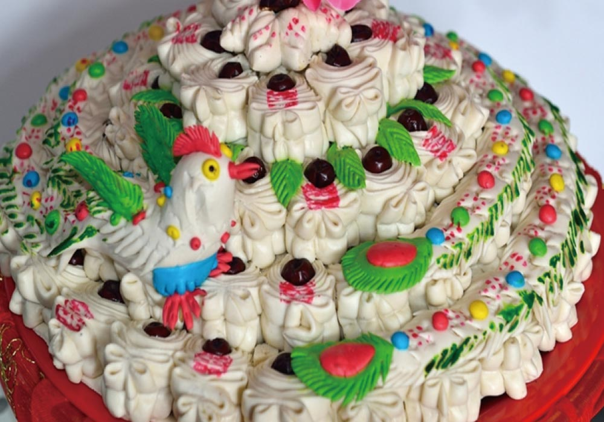

欢迎登陆云丘山景区官方网站！


证书编号：08396-1103-01
颁证时间：2011年4月19日
山西省乡宁县云丘山旅游景区23名员工于2011年3月4日至19日采用1580斤面粉制作而成的云丘山大花馍，高3米、直径1.5米、重1220千
克，创世界纪录协会世界最大的花馍世界纪录。
云丘山花馍是一种山西省的汉族民俗艺术品。历史悠久、品种繁多，按功能可分为节庆习俗馍、人生礼仪馍和日常食用馍3个大类。所谓节庆习俗馍主要是用来敬奉天地神灵，祭祀祖宗先辈。据了解，每年春节、清明节、端午节还有中秋节，家里的妇女都要蒸馍，蒸得最多的就是大年花馍、清明花馍、端午花馍和中秋花馍。
而人生礼仪馍则是人人社会交往、和谐亲戚的主要礼品，主要有婚俗花馍、贺寿花馍、生育花馍、周岁花馍、还愿花馍、探病花馍和丧葬花馍，往往是亲戚朋友家婚丧嫁娶，孩子满月、周岁以及自家还愿时所用。日常食用馍是指日常人们吃食所用，但也花样众多。“四方卷子、油卷子都是平时吃得较多的馍。除了这些还有荷叶饼、杏仁馍、葱花卷子、银丝卷。”村民们笑着说，四方卷子方方正正，寓意做人要规矩；而油卷子，外面是方形，里面一圈一圈，方中有圆，圆中有方，寓意做人要规矩，做事要圆满。
节气馍是乡宁云丘山延续几千年来农耕社会人们敬畏天地神灵，蒸馍祭献的传统习俗，制作的具有浓郁地方特色和文化内涵的面馍。
二十三蒸饦子，乡宁城里及城北人们在腊月二十三这天多蒸蒸饦子，是将和好的起面擀成薄饼，一层一层抹上油叠放起来上锅蒸，蒸好后上面放上糖瓜，祭献灶王爷。
大年乡宁城里过年蒸的馍大致与乡宁西片农村一样，但是也有个别差异。西片农村过年蒸枣山、枣盘、枣花、踅踅子馍、混沌馍、娃馍、花卷馍和天地爷馍。而乡宁城里则蒸枣山、枣盘、枣花、大馍馍（大枣花）、桃桃子和猪头馍。枣山、枣盘：用来供奉灶王爷，有步步高的寓意，也有言好事的美好祝愿。 枣 糕：现在人们说枣糕馍中间垫枣，取早日高升之意。据传：枣糕就是远古祭祀太阳的太阳糕，人们用枣子（代表果木）、白面（代表粮食），用圆形的枣糕象征太阳，每年二月初一春天的播种季节进行祭祀太阳，祈求一年的风调雨顺、五谷丰登。枣 花：“S”形，象征着阴阳两极。枣花又是“造化”的谐音，代表着变化，阴中有阳，阳中有阴，是远古图腾文化的传承与表现的一种形式。
踅踅子：形似一条盘旋的龙，是中华民族龙图腾文化的一种表现形式，龙做盘旋向上状，也有扶摇直上，步步高升的吉祥寓意。
混沌馍：西片农村送长辈多送混沌馍，有尊崇的意思。混沌馍肚子大，有个蒸裂的开口，寓意老人笑口常开，心宽体胖。
娃 馍：家中有儿童的，长辈要送娃馍，回赠对方时，如果是和自己平辈的人，送花卷馍。对方若是自己的长辈，要送混沌馍。娃馍的形状像一条卷曲的小蛇，龙头凤尾。祈愿孩子们生龙活虎，能成大器。
正月十五蓝蓝子 圪拽子：乡宁西片农村正月十五祭献天地用圪拽子，祭献完后打一堆野火将圪拽子烤着吃掉。而祭献芒神、五谷及土地则用蓝蓝子，寓收获、丰收之意。
清明节：乡宁城里清明节祭献与城西片农村有很大区别。城里清明节祭献子柱、顶子、闲子柱、滚坟鱼、娃娃子、子推燕，而城西片农村里祭献子柱、滚坟馍、地神爷馍。
子 柱：子柱的制作城里和城西片有很大区别。城里的子柱是在大圆馍上盘蛇蛇子（龙），圆馍中包麦麸、三个核桃和两个枣。取多子多福之意。盘蛇蛇子（龙）寓意望子成龙，多龙子龙孙之意。子柱上要有一个状似石榴的顶子，内包一个鸡蛋。祭献时子柱要成对放，前面倚着娃娃子。
西片农村的子柱圆馍里也包麦麸和核桃，但不包枣。圆馍上有各种飞禽走兽，上面有一个磨盘形式的小盖。传说伏羲女娲曾各自滚一碾盘，碾盘合在一起后，两人结合。寓意天作之合，多福多子之意。
顶子：石榴形状的顶子，取榴开结百子的寓意，清代的官员头戴顶子，顶子也有祈求当官的意思。 顶子：石榴形状的顶子，取榴开结百子的寓意，清代的官员头戴顶子，顶子也有祈求当官的意思。
娃娃子：娃娃子是祭献的人形面人，头里和肚子里分别包个核桃，代表头脑和心脏，头戴帽，左手拿书，右手执笔，是男性，并且要体现出男性生殖器的特征。乡宁城里清明节多蒸此上坟。
滚坟鱼：上坟祭奠后，家中子嗣用滚坟鱼在坟头上滚几遍，取辈辈有余之意。子推燕：祭奠介子推用的馍，乡宁清明节多多蒸此上坟用。
地神爷馍：西片农村清明节祭土地神、芒神用，圆馍上做一粮仓的造型，寓意五谷丰登，仓廪丰实。
枕头鱼鱼馍：这种馍馍主要是送亲戚的，若送男的，里边包核桃，若送女的，里边包鸡蛋。包核桃寓意留根，生下孩子头脑聪明。包鸡蛋寓意不留根，生下孩子机灵能干。
闲子柱、闲鱼鱼：主要用来送给女戚，女戚不上坟。乡宁城里做法是包枣不包核桃，而西片农村多在鱼鱼子中包蛋。
八月十五中秋节 蒸月饼：城里和西片农村都蒸月饼祭献嫦娥，里面多填红糖。
过事馍是乡宁云丘山延续上古时期图腾崇拜和生殖崇拜的传统民俗，蒸制的形象生动，寓意美好的传统面馍。
红事过事馍：城里：酵母馍、卷子（俗称沟蛋子馍）、豆馅馍
西片农村：扎花馍、随花馍、谢媒大馍
卷子：形似臀部，俗称沟蛋子，象征着女性生殖，有开口了的意思。
豆馅馍：圆馍上点一红点，形似女性的乳房，与卷子一样，代表了生殖文化的含义。
扎花馍：新婚男女二人晚上吃的馍，内包糖、蜜、油，以示甜蜜和好。民间有顺口溜：“先包核桃后包枣，婆夫两个经常好，儿一双，女一对，花花搭搭坐半坯（坯指土炕，土坑用土坯做成，方言称坯），要小子（男孩），要个能打能算的，要女子（女儿），要个能裁能剪的，不要呲眉子瞪眼的”。扎花馍上要盖红双喜。
随花馍：与扎花馍一样，新婚男女二人若吃不完，父母也可以吃。
寿 桃：桃桃子，上有面塑的“福”和“寿”字。
坐月子：西片农村蒸干馍，本家做，亲戚也做，相互馈赠。干馍寓意生下的孩子精明能干。
周 岁：牛箍鸾 孩子过生日蒸的吉祥馍。城西片与城里在馍的样式上有些区别：城里首位相连，呈圈状，上有面塑飞禽走兽，花鸟鱼虫。牛箍鸾有周而复始，长寿之意。城西片则用顶针在上面压出许多钱串子一样图案，寓意多财多寿之意。还愿：家中有人生病或遇到大事，在庙里或家里许愿，事后蒸面食猪头献爷、酬神。
看病人：城里必须将蒸好的馍馍（不分种类的各种式样的馍馍均可，如：枣花、圆馍、卷子······）抹上蜂蜜过油炸馍馍上面部分，方可送给病人。称油馍馍。据说:油炸过的馍馍会把一切病魔、邪恶的东西驱除干净的。
白事过事馍：城里献食献两类：花食子和三牲。
花食子：一般摆4盘，每盘摆4个，下3上1，内容为鸟兽鱼虫，瓜果、草木之类。
三 牲：猪牛羊，全部用油炸过，代表是隆重的祭祀礼。
发棺馍：在老人过六、七十岁后，一般要给老人做寿木，就是棺材，做好棺材后，把一个圆馍放在棺材里面，馍上插一纸花，这馍就叫发棺馍。等老人去世后，把馍糅碎放在汤水罐里，让儿子们用筷子搅，据说这样可让子孙们升官发财。
四方卷子，取其方方正正，寓意做人作事要正来正去，有规有矩。填油卷子，此馍馍外方内圆，寓意做人作事要中规中矩，要圆满成功。此外还有：酥笓卷子、枣馍馍、杏仁馍馍、杏皮馍馍 、葱花馍馍 、豆馅馍馍 、糖馍馍 、圆馍 、椒叶馍馍 、瓷板窝窝 、卷肠 、韭菜馍 、糖三角 、荚荚子 、包子等多种馍。
2011年3月19日上午，在华夏·乡宁（云丘山）2011年中和文化节花馍文化艺术展上，5个重量分别达一吨以上的巨型花馍吸引了众多游客驻足观看。
晋南花馍素来有名，但像这样直径有1.5米、高近3米，重约1.2吨，需要三四个成年人手拉手才能围起来的巨型花馍堪称史上第一大花馍。现场的游客或拍照留念，或凑上前去和大花馍比个子。在啧啧称奇的同时，大家最感兴趣的是这5个巨型花馍究竟是怎么做出来的。
文化节组委会副主任董柏璋介绍说：“这5个大花馍共用了4122公斤面粉，由23个人历时半个月的时间精制而成。经过发酵、接面、揉面，再用专门定做的直径1.6米的大笼圈蒸成、晾干，然后再一层一层进行组装，最后再蒸一些小花馍染色后插上去，方大功告成。云丘山大花馍，被授予世界最大的花馍世界纪录证书。
此次艺术展吸引了全省30多名花馍艺人前来参展，通过对各地200多种神态各异的民间花馍艺术品的集中展示，全面展现了当地悠久的农耕文化和民间花馍艺术的独特魅力。



Copyright 2015. YUNQIUSHAN.ALL Rights Reserved. ICP 备案号：晋ICP备12007937号 乡宁县云丘山旅游开发责任有限公司版权所有